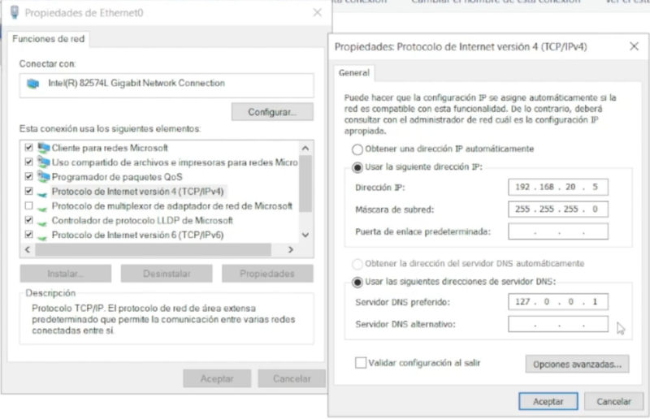
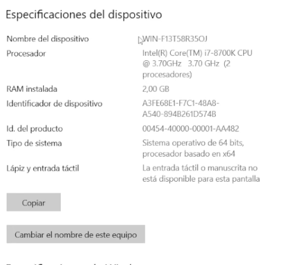
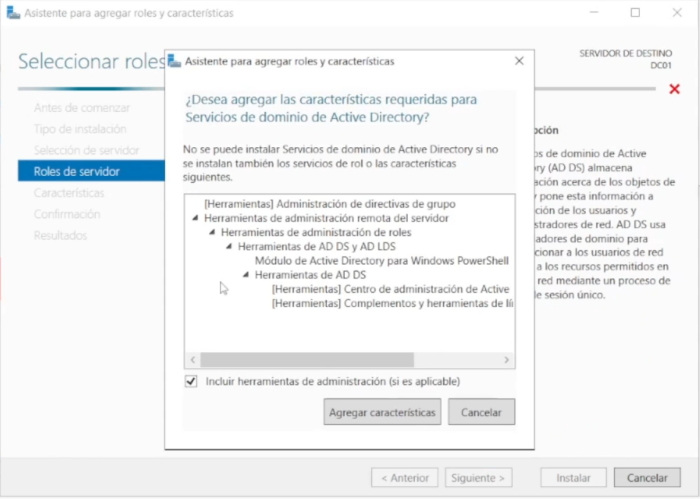
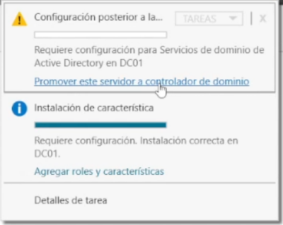
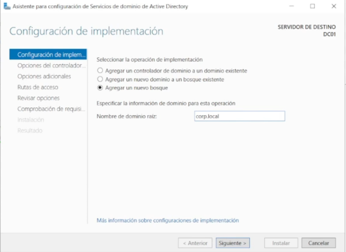
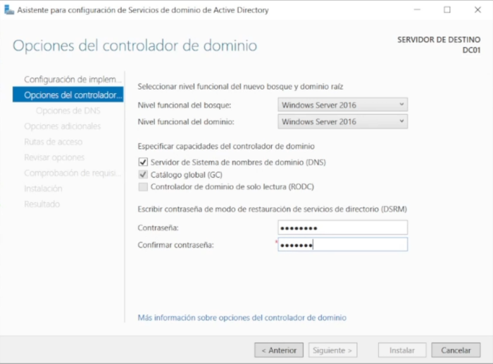
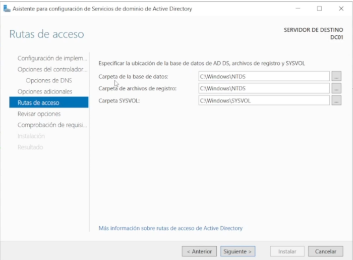

Instalando WindowsServer
Descargada la ISO y creada la maquina virtual en VMWARE
Comenzamos la configuración del Domain Controller empezando por establecer una IP estática.
para esto click derecho en el icono de red, adaptadores ethernet y vamos a las propiedades de protocolo IPV4
:
En este caso la tenemos conectada a una red virtual creada por VMWARE en la que tenemos la subred 192.168.20.x

Cambiamos el nombre de la maquina a DC01
En el administrador del servidor configuramos roles y características

En la instalación seleccionamos los servicios para un AD DC (Active directory domain controler)

Terminamos la instalación y reiniciamos la máquina

Configuramos las características necesarias para promover el servidor como controlador de dominio

Agregamos un nuevo bosque

Establecer una contraseña
En el nombre de NETBIOS dejamos el que genera y en las rutas de acceso por ahora las dejamos por defecto también.
